全文翻译
Abstract
去噪扩散概率模型（DDPMs）在无需对抗训练的情况下实现了高质量的图像生成，但为了生成一个样本，它们需要模拟马尔可夫链的多个步骤。为了加速采样过程，我们提出了去噪扩散隐式模型（DDIMs），这是一类更高效的迭代隐式概率模型，其训练过程与DDPMs相同。在DDPMs中，生成过程被定义为特定马尔可夫扩散过程的逆过程。我们通过一类非马尔可夫扩散过程对DDPMs进行了扩展，这些非马尔可夫扩散过程能够产生与DDPMs相同的训练目标。这些非马尔可夫过程可以对应于确定性的生成过程，从而产生能够更快生成高质量样本的隐式模型。实验证明，与DDPMs相比，DDIMs生成高质量样本的速度在实际时间上快10到50倍，并且可以在计算量和样本质量之间进行权衡，能够直接在潜在空间中进行语义上有意义的图像插值，还能以极低的误差重建观测数据。
Introduction
深度生成模型已展现出在诸多领域生成高质量样本的能力（Karras等人，2020；van den Oord等人，2016a）。在图像生成方面，生成对抗网络（GANs，Goodfellow等人，2014）目前生成的样本质量要高于基于似然的方法，如变分自编码器（Kingma和Welling，2013）、自回归模型（van den Oord等人，2016b）和归一化流（Rezende和Mohamed，2015；Dinh等人，2016 ）。然而，GANs为了稳定训练，在优化方法和架构选择上有非常特殊的要求（Arjovsky等人，2017；Gulrajani等人，2017；Karras等人，2018；Brock等人，2018），并且可能无法覆盖数据分布的所有模式（Zhao等人，2018）。
最近关于迭代生成模型（Bengio等人，2014）的研究成果，例如去噪扩散概率模型（DDPM，Ho等人，2020）和噪声条件得分网络（NCSN，Song和Ermon，2019），已经证明了无需进行对抗训练就能生成与GANs质量相当的样本。为实现这一点，许多去噪自编码模型被训练用于对被不同程度高斯噪声破坏的样本进行去噪。然后，通过一个马尔可夫链生成样本，该马尔可夫链从白噪声开始，逐步将其去噪转化为图像。这种生成马尔可夫链过程要么基于朗之万动力学（Song和Ermon，2019），要么通过反转一个将图像逐步转化为噪声的正向扩散过程得到（Sohl-Dickstein等人，2015）。
这些模型的一个关键缺点是，它们需要多次迭代才能生成高质量样本。对于DDPMs来说，这是因为其生成过程（从噪声到数据）是对正向扩散过程（从数据到噪声）的近似逆向，而正向扩散过程可能包含数千步；生成单个样本需要迭代所有步骤，这与GANs相比要慢得多，GANs只需让数据通过网络一次即可。例如，在英伟达2080 Ti GPU上，从DDPM中采样50,000张32×32大小的图像大约需要20小时，而从GANs中采样同样数量的图像则不到一分钟。对于更大尺寸的图像，这个问题更加突出，在同一GPU上采样50,000张256×256大小的图像可能需要近1000小时。
为了缩小DDPMs与GANs之间的效率差距，我们提出了去噪扩散隐式模型（DDIMs）。DDIMs属于隐式概率模型（Mohamed和Lakshminarayanan，2016），并且与DDPMs密切相关，它们使用相同的目标函数进行训练。
| 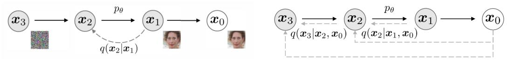 |
|---|
| Figure 1: Graphical models for diffusion (left) and non-Markovian (right) inference models |
在第3节中，我们将DDPMs使用的马尔可夫正向扩散过程扩展到非马尔可夫扩散过程，对于这些非马尔可夫过程，我们仍然能够设计合适的逆向生成马尔可夫链。我们证明了由此产生的变分训练目标具有一个共同的替代目标，而这个替代目标恰好是用于训练DDPM的目标。因此，我们只需选择不同的非马尔可夫扩散过程（第4.1节）以及相应的逆向生成马尔可夫链，就可以使用同一个神经网络从众多生成模型中自由选择。特别地，我们能够使用那些能产生 “短” 生成马尔可夫链的非马尔可夫扩散过程（第4.2节），这些短链可以通过少量步骤模拟，这能在对样本质量影响较小的情况下大幅提高采样效率。在第5节中，我们展示了DDIMs相较于DDPMs在多个方面的优势。第一，当我们使用提出的方法将采样速度提高10到100倍时，DDIMs生成的样本质量优于DDPMs。第二，DDIMs的样本具有 “一致性” 特性，而DDPMs不具备这一特性：如果从相同的初始潜在变量出发，使用不同长度的马尔可夫链生成多个样本，这些样本会具有相似的高层次特征。第三，由于DDIMs的 “一致性”，我们可以通过操纵初始潜在变量在DDIMs中进行语义上有意义的图像插值，而DDPMs由于其随机生成过程，只能在图像空间附近进行插值。
BACKGROUND
给定来自数据分布$q(x_{0})$的样本，我们希望学习一个模型分布$p_{\theta}(x_{0})$，它能逼近$q(x_{0})$且易于从中采样。去噪扩散概率模型（DDPMs，Sohl-Dickstein等人，2015；Ho等人，2020 ）是一种潜在变量模型，其形式为：
其中$p_{\theta}(x_{0:T}) := p_{\theta}(x_{T})\prod_{t = 1}^{T}p_{\theta}^{(t)}(x_{t - 1}|x_{t})$，$x_{1}, \ldots, x_{T}$是与$x_{0}$处于相同样本空间（记为$x$ ）的潜在变量。通过最大化变分下界来学习参数$\theta$，以使模型分布拟合数据分布$q(x_{0})$：
其中$q(x_{1:T}|x_{0})$是关于潜在变量的某个推断分布。与典型的潜在变量模型（如变分自编码器，Rezende等人，2014 ）不同，DDPMs使用固定（而非可训练）的推断过程$q(x_{1:T}|x_{0})$进行学习，并且潜在变量的维度相对较高。例如，Ho等人（2020）考虑了以下由递减序列$\alpha_{1:T} \in (0, 1]^{T}$参数化的具有高斯转移的马尔可夫链：
其中
这里协方差矩阵的对角项确保为正。由于采样过程的自回归性质（从$x_{0}$到$x_{T}$ ），这被称为正向过程。我们将潜在变量模型$p_{\theta}(x_{0:T})$（一个从$x_{T}$到$x_{0}$采样的马尔可夫链）称为生成过程，因为它逼近了难以处理的逆向过程$q(x_{t - 1}|x_{t})$。直观地说，正向过程逐渐向观测值$x_{0}$添加噪声，而生成过程则逐渐对带噪观测值进行去噪（图1，左）。
正向过程的一个特殊性质是：
所以我们可以将$x_{t}$表示为$x_{0}$和噪声变量$\epsilon$的线性组合：
其中$\epsilon \sim \mathcal{N}(0, I)$。
当我们将$\alpha_{T}$设置得足够接近0时，对于所有的$x_{0}$，$q(x_{T}|x_{0})$都收敛到标准高斯分布，因此自然地设置$p_{\theta}(x_{T}) := \mathcal{N}(0, I)$ 。如果所有的条件分布都被建模为具有可训练均值函数和固定方差的高斯分布，那么公式（2）中的目标函数可以简化为：
其中$\epsilon_{\theta} = \{\epsilon_{\theta}^{(t)}\}_{t = 1}^{T}$是一组$T$个函数，每个$\epsilon_{\theta}^{(t)}: X \to X$（由$t$索引）是一个具有可训练参数$\theta^{(t)}$的函数，并且$\gamma = [\gamma_{1}, \ldots, \gamma_{T}]$是目标函数中的一个正系数向量，它取决于$\alpha_{1:T}$。在Ho等人（2020）的研究中，为了最大化训练模型的生成性能，优化的是$\gamma = 1$时的目标函数；这也是基于得分匹配（Hyvarinen，2005；Vincent，2011 ）的噪声条件得分网络（Song和Ermon，2019）中使用的相同目标函数。从训练好的模型中采样$x_{0}$时，首先从先验分布$p_{\theta}(x_{T})$中采样$x_{T}$，然后通过生成过程迭代地采样$x_{t - 1}$。
正向过程的长度$T$是DDPMs中的一个重要超参数。从变分的角度来看，较大的$T$值能使逆向过程接近高斯分布（Sohl-Dickstein等人，2015），这样用高斯条件分布建模的生成过程就能成为一个很好的近似；这促使人们选择较大的$T$值，例如Ho等人（2020）中选择$T = 1000$。然而，由于要获得样本$x_{0}$，所有$T$次迭代都必须顺序执行，而不能并行执行，因此从DDPMs中采样比从其他深度生成模型中采样要慢得多，这使得它们在计算资源有限和延迟要求严格的任务中不太实用。
VARIATIONAL INFERENCE FOR NON-MARKOVIAN FORWARD PROCESSES
由于生成模型是对推断过程的逆向近似，为了减少生成模型所需的迭代次数，我们需要重新思考推断过程。我们的关键发现是，以$L_{\gamma}$形式呈现的DDPM目标函数仅依赖于边缘分布$q(x_{t}|x_{0})$，而并非直接依赖于联合分布$q(x_{1:T}|x_{0})$。鉴于存在许多具有相同边缘分布的推断分布（联合分布），我们探索了非马尔可夫的替代推断过程，这将引出新的生成过程（图1，右）。如下文所示，这些非马尔可夫推断过程会产生与DDPM相同的替代目标函数。在附录A中，我们证明了非马尔可夫视角不仅适用于高斯分布的情况。
NON-MARKOVIAN FORWARD PROCESSES
我们考虑一族由实向量$\sigma \in \mathbb{R}_{\geq0}^{T}$索引的推断分布$\mathcal{Q}$：
其中$q_{\sigma}(x_{T}|x_{0}) = \mathcal{N}(\sqrt{\alpha_{T}}x_{0}, (1 - \alpha_{T})I)$，并且对于所有$t > 1$，有
选择这样的均值函数是为了确保对于所有的$t$，都有$q_{\sigma}(x_{t}|x_{0}) = \mathcal{N}(\sqrt{\alpha_{t}}x_{0}, (1 - \alpha_{t})I)$（见附录B中的引理1），这样就定义了一个符合预期、与“边缘分布”匹配的联合推断分布。正向过程可以根据贝叶斯规则推导得出：
它也是高斯分布（尽管在本文后续内容中我们不会用到这个事实）。与公式（3）中的扩散过程不同，这里的正向过程不再是马尔可夫过程，因为每个$x_{t}$可能同时依赖于$x_{t - 1}$和$x_{0}$。$\sigma$的大小控制着正向过程的随机性；当$\sigma \to 0$时，我们会达到一个极端情况，即只要观察到某个$t$对应的$x_{0}$和$x_{t}$，那么$x_{t - 1}$就会被确定下来。
GENERATIVE PROCESS AND UNIFIED VARIATIONAL INFERENCE OBJECTIVE
接下来，我们定义一个可训练的生成过程$p_{\theta}(x_{0:T})$，其中每个$p_{\theta}^{(t)}(x_{t - 1}|x_{t})$都利用了$q_{\sigma}(x_{t - 1}|x_{t}, x_{0})$的信息。直观地说，给定一个带噪观测值$x_{t}$，我们首先预测相应的$x_{0}$，然后利用这个预测值，通过已定义的逆向条件分布$q_{\sigma}(x_{t - 1}|x_{t}, x_{0})$得到样本$x_{t - 1}$。
对于某些$x_{0} \sim q(x_{0})$和$\epsilon_{t} \sim \mathcal{N}(0, I)$，可以使用公式（4）得到$x_{t}$。然后模型$\epsilon_{\theta}^{(t)}(x_{t})$尝试在不知道$x_{0}$的情况下，从$x_{t}$预测$\epsilon_{t}$。通过重写公式（4），可以预测去噪后的观测值，也就是给定$x_{t}$时对$x_{0}$的预测：
然后，我们定义生成过程，其先验为固定的$p_{\theta}(x_{T}) = \mathcal{N}(0, I)$，并且
其中$q_{\sigma}(x_{t - 1}|x_{t}, f_{\theta}^{(t)}(x_{t}))$的定义与公式（7）相同，只是将$x_{0}$替换为$f_{\theta}^{(t)}(x_{t})$ 。在$t = 1$的情况下，我们添加了一些高斯噪声（协方差为$\sigma_{1}^{2}I$），以确保生成过程在任何地方都有定义。
我们通过以下变分推断目标（它是关于$\epsilon_{\theta}$的一个泛函）来优化$\theta$：
这里我们根据公式（6）对$q_{\sigma}(x_{1:T}|x_{0})$进行因式分解，根据公式（1）对$p_{\theta}(x_{0:T})$进行因式分解。从$J_{\sigma}$的定义来看，似乎对于每一个$\sigma$的选择都需要训练一个不同的模型，因为它对应着不同的变分目标（以及不同的生成过程）。然而，正如我们下面将展示的，对于某些权重$\gamma$，$J_{\sigma}$与$L_{\gamma}$是等价的。
定理1：对于所有$\sigma > 0$，存在$\gamma \in \mathbb{R}_{>0}^{T}$和$C \in \mathbb{R}$，使得$J_{\sigma} = L_{\gamma} + C$。
变分目标$L_{\gamma}$有一个特殊性质：如果模型$\epsilon_{\theta}^{(t)}$的参数$\theta$在不同的$t$之间不共享，那么$\epsilon_{\theta}$的最优解将不依赖于权重$\gamma$（因为通过分别最大化求和中的每一项就可以达到全局最优）。$L_{\gamma}$的这个性质有两个重要意义。一方面，这证明了在DDPMs中使用$L_{1}$作为变分下界的替代目标函数是合理的；另一方面，由于定理1表明$J_{\sigma}$与某个$L_{\gamma}$等价，所以$J_{\sigma}$的最优解也与$L_{1}$的最优解相同。因此，如果在模型$\epsilon_{\theta}$中参数在不同的$t$之间不共享，那么Ho等人（2020）使用的$L_{1}$目标函数也可以作为变分目标$J_{\sigma}$的替代目标。
SAMPLING FROM GENERALIZED GENERATIVE PROCESSES
以$L_{1}$为目标函数，我们不仅在学习Sohl-Dickstein等人（2015）和Ho等人（2020）中所考虑的马尔可夫推断过程的生成过程，还在学习由$\sigma$参数化的许多非马尔可夫正向过程的生成过程。因此，我们基本上可以将预训练的DDPM模型作为新目标的解决方案，然后通过改变$\sigma$来找到更符合我们需求的样本生成过程。
| 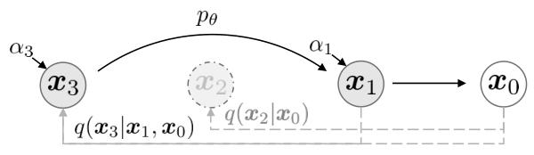 |
|---|
| Figure 2: Graphical model for accelerated generation, where $\tau=[1,3]$ |
DENOISING DIFFUSION IMPLICIT MODELS
从公式（10）中的$p_{\theta}(x_{1:T})$出发，可以通过以下方式从样本$x_{t}$生成样本$x_{t - 1}$：
其中$\epsilon_{t} \sim \mathcal{N}(0, I)$是与$x_{t}$相互独立的标准高斯噪声，并且我们定义$\alpha_{0}:=1$ 。不同的$\sigma$值会产生不同的生成过程，但都使用相同的模型$\epsilon_{\theta}$，因此无需重新训练模型。当对于所有的$t$，$\sigma_{t}=\sqrt{(1 - \alpha_{t - 1})/(1 - \alpha_{t})}\sqrt{1 - \alpha_{t}/\alpha_{t - 1}}$时，正向过程变为马尔可夫过程，生成过程则变为DDPM。
我们注意到另一种特殊情况，当对于所有的$t$，$\sigma_{t}=0$时（尽管定理1未涵盖这种情况，但我们总是可以通过让$\sigma_{t}$非常小来逼近它），正向过程在给定$x_{t - 1}$和$x_{0}$的情况下（除了$t = 1$ ）变为确定性过程；在生成过程中，随机噪声$\epsilon_{t}$前面的系数变为零。由此产生的模型成为一个隐式概率模型（Mohamed & Lakshminarayanan, 2016），其中样本是通过固定的程序从潜在变量中生成的（从$x_{T}$到$x_{0}$ ）。我们将其命名为去噪扩散隐式模型（DDIM，发音为/d:Im/），因为它是一个使用DDPM目标函数训练的隐式概率模型（尽管正向过程不再是扩散过程）。
ACCELERATED GENERATION PROCESSES
在前面的章节中，生成过程被视为对逆向过程的近似；由于正向过程有$T$步，生成过程也必须进行$T$步采样。然而，由于去噪目标$L_{1}$只要$q_{\sigma}(x_{t}|x_{0})$固定，就不依赖于具体的正向过程，所以我们也可以考虑长度小于$T$的正向过程，这在无需训练不同模型的情况下加速了相应的生成过程。
我们考虑正向过程不是定义在所有潜在变量$x_{1:T}$上，而是定义在子集$\{x_{\tau_{1}}, \ldots, x_{\tau_{S}}\}$上，其中$\tau$是$[1, \ldots, T]$的一个长度为$S$的递增子序列。特别地，我们定义在$x_{\tau_{1}}, \ldots, x_{\tau_{S}}$上的顺序正向过程，使得$q(x_{\tau_{i}}|x_{0}) = \mathcal{N}(\sqrt{\alpha_{\tau_{i}}}x_{0}, (1 - \alpha_{\tau_{i}})I)$与“边缘分布”匹配（见图2的示例）。现在生成过程根据反转的$(\tau)$来采样潜在变量，我们将其称为（采样）轨迹。当采样轨迹的长度远小于$T$时，由于采样过程的迭代性质，我们可以显著提高计算效率。
使用与第3节类似的论证，我们可以证明使用以$L_{1}$为目标函数训练的模型是合理的，因此在训练过程中无需进行更改。我们表明，只需对公式（12）中的更新进行轻微修改，就可以得到新的、更快的生成过程，这适用于DDPM、DDIM以及公式（10）中考虑的所有生成过程。我们在附录C.1中给出了这些细节。
原则上，这意味着我们可以训练一个具有任意数量正向步骤的模型，但在生成过程中只从其中一些步骤进行采样。因此，训练好的模型可以考虑比Ho等人（2020）中更多的步骤，甚至可以考虑连续的时间变量$t$（Chen等人，2020）。我们将这方面的实证研究留作未来的工作。
RELEVANCE TO NEURAL ODES
此外，我们可以根据公式（12）重写DDIM的迭代过程，它与求解常微分方程（ODEs）的欧拉积分的相似性就更加明显：
为了推导相应的ODE，我们可以用$\sigma$对$(\sqrt{1 - \alpha}/\sqrt{\alpha})$进行重新参数化，用$\bar{x}$对$(x/\sqrt{\alpha})$进行重新参数化。在连续情况下，$\sigma$和$x$是$t$的函数，其中$\sigma: \mathbb{R}_{\geq0} \to \mathbb{R}_{\geq0}$是连续的、单调递增的，且$\sigma(0)=0$ 。公式（13）可以看作是对以下ODE的欧拉方法：
其初始条件是$x(T) \sim \mathcal{N}(0, \sigma(T))$（对应于$\alpha \approx 0$的情况，此时$\sigma(T)$非常大）。这表明，通过足够多的离散化步骤，我们也可以反转生成过程（从$t = 0$到$T$ ），将$x_{0}$编码为$x_{T}$，并模拟公式（14）中ODE的逆向过程。这意味着与DDPM不同，我们可以使用DDIM获得观测值的编码（以$x_{T}$的形式），这对于其他需要模型潜在表示的下游应用可能是有用的。
在同期的一项工作中，Song等人（2020）提出了一种“概率流ODE”，旨在基于分数恢复随机微分方程（SDE）的边际密度，从中可以得到类似的采样调度。在这里，我们指出我们的ODE等同于他们工作中的一个特殊情况（对应于DDPM的连续时间模拟）。
命题1：具有最优模型$\epsilon_{\theta}^{(t)}$的公式（14）中的ODE，有一个与之等价的概率流ODE，它对应于Song等人（2020）中的“方差爆炸”SDE。
我们在附录B中给出了证明。虽然这些ODE是等价的，但采样过程并不相同。概率流ODE的欧拉方法会进行如下更新：
在采样步骤足够多的情况下，这些选择的差异不大；但在较少的采样步骤下，这些选择会产生不同的结果。我们是相对于$d\sigma(t)$进行欧拉步（它与“时间”$t$的缩放关系不太直接），而Song等人（2020）是相对于$dt$进行欧拉步。
EXPERIMENTS
在本节中，我们展示了在考虑较少迭代次数的情况下，去噪扩散隐式模型（DDIM）在图像生成方面优于去噪扩散概率模型（DDPM），与原始的DDPM生成过程相比，速度提升了10到100倍。此外，与DDPM不同，一旦初始潜在变量$x_T$固定，DDIM无论生成轨迹如何，都能保留高层次的图像特征，因此它们能够直接在潜在空间中进行插值。DDIM还可用于对样本进行编码，从潜在代码中重建样本，而DDPM由于随机采样过程无法做到这一点。
对于每个数据集，我们使用相同的训练模型，其中$T = 1000$，目标函数为公式（5）中的$L_{\gamma}$，且$\gamma = 1$。正如我们在第3节中所讨论的，训练过程无需改变。我们唯一的改变在于从模型生成样本的方式，通过控制$\tau$（它控制获取样本的速度）和$\sigma$（它在确定性的DDIM和随机的DDPM之间进行插值）来实现。
我们考虑$[1, …, T]$的不同子序列$\tau$，以及由$\tau$中的元素索引的不同方差超参数$\sigma$。为了简化比较，我们考虑形式为：
的$\sigma$，其中$\eta \in \mathbb{R}_{\geq0}$是我们可以直接控制的超参数。当$\eta = 1$时，这包括原始的DDPM生成过程；当$\eta = 0$时，则为DDIM。我们还考虑了随机噪声标准差大于$\sigma(1)$的DDPM，我们将其表示为$\hat{\sigma}$：$\hat{\sigma}_{\tau_{i}}=\sqrt{1-\alpha_{\tau_{i}} / \alpha_{\tau_{i-1}}}$。这仅在Ho等人（2020年）的实现中用于获取CIFAR10样本，而不用于其他数据集的样本。更多详细信息请参见附录D。
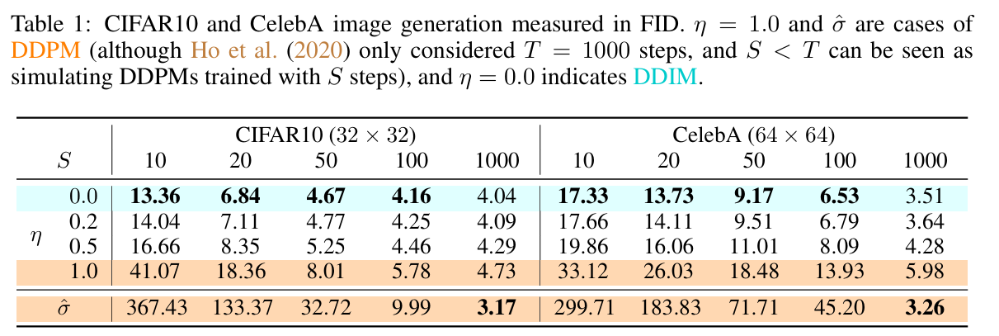
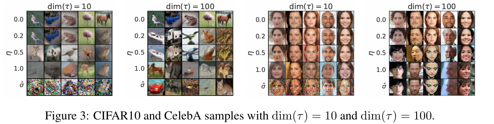
SAMPLE QUALITY AND EFFICIENCY
在表1中，我们报告了在CIFAR10和CelebA上训练的模型生成样本的质量，通过弗雷歇初始距离（FID，Heusel等人，2017年）进行衡量，其中我们改变用于生成样本的时间步数（$dim(\tau)$）和过程的随机性（$\eta$）。正如预期的那样，随着$dim(\tau)$的增加，样本质量会提高，这体现了样本质量和计算成本之间的权衡。我们观察到，当$dim(\tau)$较小时，DDIM（$\eta = 0$）实现了最佳的样本质量，而DDPM（$\eta = 1$和$\hat{\sigma}$）在相同$dim(\tau)$下，通常比其随机性较低的对应模型样本质量更差，除了在$dim(\tau)=1000$且采用Ho等人（2020年）报告的$\hat{\sigma}$的情况下，此时DDIM的样本质量略逊一筹。然而，对于较小的$dim(\tau)$，$\hat{\sigma}$的样本质量会变得更差，这表明它不适合较短的轨迹。另一方面，DDIM更能始终如一地实现高质量样本。在图3中，我们展示了具有相同采样步数但不同$\eta$的CIFAR10和CelebA样本。对于DDPM，当采样轨迹为10步时，样本质量会迅速下降。对于$\hat{\sigma}$的情况，在短轨迹下生成的图像似乎有更多的噪声扰动；这就解释了为什么其FID分数比其他方法差得多，因为FID对这种扰动非常敏感（如Jolicoeur-Martineau等人，2020年所讨论的）。在图4中，我们展示了生成一个样本所需的时间与样本轨迹长度成线性关系。这表明DDIM有助于更高效地生成样本，因为可以用更少的步数生成样本。值得注意的是，DDIM能够在20到100步内生成与1000步模型质量相当的样本，与原始的DDPM相比，速度提升了10到50倍。尽管DDPM在100倍步数下也能实现合理的样本质量，但DDIM达到相同质量所需的步数要少得多；在CelebA数据集上，100步DDPM的FID分数与20步DDIM的FID分数相似。
SAMPLE CONSISTENCY IN DDIMS
对于DDIM，生成过程是确定性的，$x_0$仅取决于初始状态$x_T$。在图5中，我们观察了在相同的初始$x_T$下，不同生成轨迹（即不同的$\tau$）下生成的图像。有趣的是，对于具有相同初始$x_T$的生成图像，无论生成轨迹如何，大多数高层次特征都是相似的。在许多情况下，仅用20步生成的样本在高层次特征上已经与用1000步生成的样本非常相似，只是在细节上有一些小差异。因此，$x_T$本身似乎就是图像的一个有信息的潜在编码；影响样本质量的微小细节编码在参数中，因为更长的采样轨迹会产生质量更好的样本，但不会显著影响高层次特征。更多样本见附录D.4。
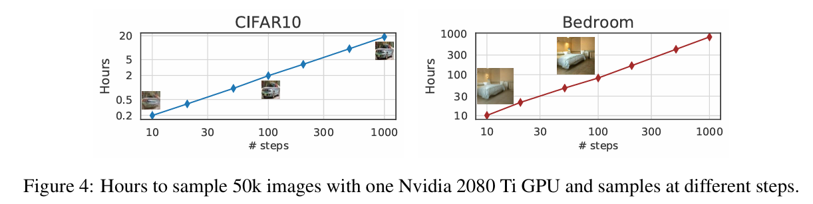
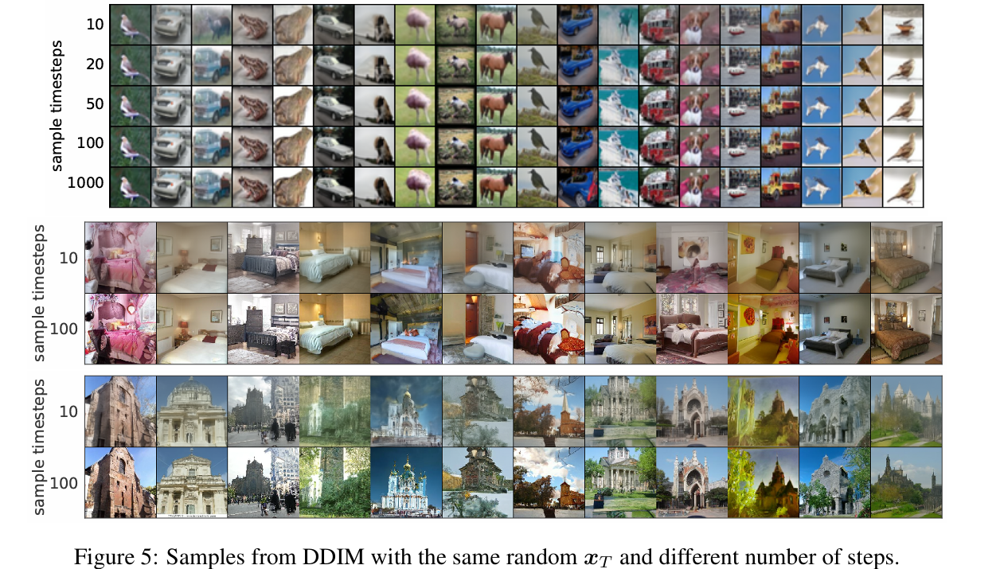
INTERPOLATION IN DETERMINISTIC GENERATIVE PROCESSES
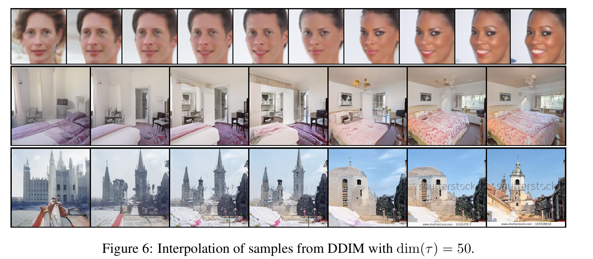
由于DDIM样本的高层次特征由$x_T$编码，我们想看看它是否会表现出与其他隐式概率模型（如GAN，Goodfellow等人，2014年）类似的语义插值效果。这与Ho等人（2020年）中的插值过程不同，因为在DDPM中，由于随机生成过程，相同的$x_T$会导致非常多样的$x_0$ 。在图6中，我们展示了在$x_T$中进行简单插值可以在两个样本之间实现语义上有意义的插值。更多细节和样本见附录D.5。这使得DDIM能够通过潜在变量直接在高层次上控制生成的图像，而DDPM无法做到这一点。
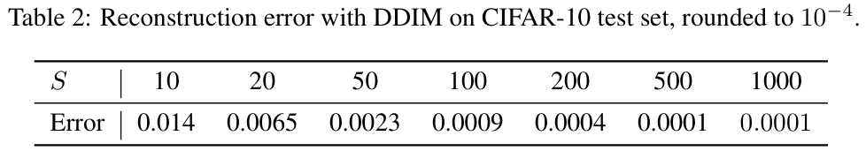
RECONSTRUCTION FROM LATENT SPACE
由于DDIM是特定常微分方程（ODE）的欧拉积分，我们想看看它是否能够从$x_0$编码到$x_T$（公式（14）的反向），并从得到的$x_T$重建$x_0$（公式（14）的正向）。我们在CIFAR-10测试集上使用CIFAR-10模型进行编码和解码，编码和解码都使用$S$步；我们在表2中报告了每个维度的均方误差（缩放到[0, 1]）。我们的结果表明，对于较大的$S$值，DDIM具有较低的重建误差，并且具有与神经ODE和归一化流相似的性质。由于DDPM的随机性，它无法做到这一点。
RELATED WORK
我们的工作基于一系列现有的将生成模型作为马尔可夫链转移算子进行学习的方法（Sohl-Dickstein等人，2015；Bengio等人，2014；Salimans等人，2014；Song等人，2017；Goyal等人，2017；Levy等人，2017）。其中，去噪扩散概率模型（DDPMs，Ho等人，2020）和噪声条件得分网络（NCSN，Song和Ermon，2019；2020）最近在生成样本质量上取得了与生成对抗网络（GANs，Brock等人，2018；Karras等人，2018）相媲美的成果。DDPMs通过优化对数似然的变分下界来学习，而NCSNs则通过对数据的非参数Parzen密度估计（Vincent，2011；Raphan和Simoncelli，2011）来优化得分匹配目标（Hyvärinen，2005）。
尽管动机不同，但DDPMs和NCSNs密切相关。它们都对多种噪声水平使用去噪自动编码器目标，并且都使用与朗之万动力学类似的过程来生成样本（Neal等人，2011）。由于朗之万动力学是梯度流的离散化（Jordan等人，1998），DDPM和NCSN都需要许多步骤才能获得高质量的样本。这与观察到的DDPM和现有的NCSN方法难以在少数几次迭代中生成高质量样本的现象相符。
另一方面，DDIM是一种隐式生成模型（Mohamed和Lakshminarayanan，2016），其中样本由潜在变量唯一确定。因此，DDIM具有一些类似于GANs（Goodfellow等人，2014）和可逆流（Dinh等人，2016）的特性，例如能够进行语义上有意义的插值。我们从纯粹的变分角度推导了DDIM，其中朗之万动力学的限制并不相关；这可以部分解释为什么在较少的迭代次数下，我们能够观察到DDIM的样本质量优于DDPM。DDIM的采样过程也让人联想到具有连续深度的神经网络（Chen等人，2018；Grathwohl等人，2018），因为无论具体的采样轨迹如何，它从相同潜在变量生成的样本都具有相似的高层次视觉特征。
DISCUSSION
我们从纯粹的变分角度提出了DDIM，这是一种使用去噪自动编码/分数匹配目标进行训练的隐式生成模型。DDIM能够比现有的DDPM和NCSN更高效地生成高质量样本，并且具备从潜在空间进行有意义插值的能力。本文提出的非马尔可夫前向过程表明，除了高斯分布（在原始扩散框架中，高斯是唯一具有有限方差的稳定分布，无法实现其他分布）之外，还可以有连续的前向过程。我们在附录A中展示了一个离散情况下的多项式前向过程示例，研究其他组合结构的类似替代方案将是一个有趣的研究方向。
此外，由于DDIM的采样过程与神经ODE相似，研究减少ODE离散化误差的方法（如Adams - Bashforth等多步方法（Butcher和Goodwin，2008））是否有助于在更少的步骤中进一步提高样本质量，将是一个有趣的研究点（Queiruga等，2020）。研究DDIM是否展现出与现有隐式模型（Bau等，2019）类似的其他属性，也是很有意义的。
ACKNOWLEDGEMENTS
作者们想要感谢杨松和赵胜家就相关想法进行的有益讨论，感谢Kuno Kim对论文初稿的审阅，以及感谢Sharvil Nanavati和Sophie Liu帮忙找出文中的错别字。本研究得到了美国国家科学基金会（NSF，项目编号：#1651565、#1522054、#1733686）、美国海军研究办公室（ONR，项目编号：N00014 - 19 - 1 - 2145）、美国空军科学研究办公室（AFOSR，项目编号：FA9550 - 19 - 1 - 0024）以及亚马逊云服务（Amazon AWS）的支持。
A NON-MARKOVIAN FORWARD PROCESSES FOR A DISCRETE CASE
在本节中，我们描述了离散数据的非马尔可夫前向过程以及相应的变分目标。由于本文的重点是加速与高斯扩散对应的逆向模型，我们将实证评估留作未来的工作。
对于一个分类观测值$x_0$，它是一个具有$K$个可能值的独热向量，我们定义前向过程如下。首先，我们将$q(x_t|x_0)$定义为以下分类分布：
其中，$\mathbf{1}_K \in \mathbb{R}^K$是一个所有元素都为$1/K$的向量，$\alpha_t$从$t = 0$时的$\alpha_0 = 1$逐渐减小到$t = T$时的$\alpha_T = 0$ 。然后，我们将$q(x_{t - 1}|x_t, x_0)$定义为以下混合分布：
或者等价地表示为：
这与我们对$q(x_t|x_0)$的定义是一致的。
类似地，我们可以将逆向过程$p_{\theta}(x_{t - 1}|x_t)$定义为：
其中，$f_{\theta}^{(t)}(x_t)$将$x_t$映射到一个$K$维向量。当$(1 - \alpha_{t - 1}) - (1 - \alpha_t)\sigma_t \to 0$时，采样过程的随机性会降低，即它将以高概率选择$x_t$或预测的$x_0$ 。
KL散度$D_{KL}(q(x_{t - 1}|x_t, x_0) || p_{\theta}(x_{t - 1}|x_t)) \quad(21)$是定义明确的，它就是两个分类分布之间的KL散度。因此，得到的变分目标函数也应该很容易优化。此外，由于KL散度是凸函数，我们有以下上界（当右侧趋近于零时，该上界是紧的）：
右侧实际上就是一个多分类损失（相差一个常数项），所以我们可以得出类似的结论，即$\sigma_t$的变化不会影响目标函数（除了重新加权）。
B PROOFS
引理1：对于公式（6）定义的$q_{\sigma}(x_{1:T}|x_0)$和公式（7）定义的$q_{\sigma}(x_{t - 1}|x_t, x_0)$，有：
证明：假设对于任意$t\leq T$，$q_{\sigma}(x_t|x_0)=\mathcal{N}(\sqrt{\alpha_t}x_0, (1 - \alpha_t)I)$成立。若：
那么我们可以通过对$t$从$T$到$1$进行归纳论证来证明该命题，因为基础情况（$t = T$）已经成立。
已知：
且
首先，根据Bishop（2006）中的公式（2.115），$q_{\sigma}(x_{t - 1}|x_0)$是高斯分布，记为$\mathcal{N}(\mu_{t - 1}, \sum_{t - 1})$，其中：
并且
因此，$q_{\sigma}(x_{t - 1}|x_0)=\mathcal{N}(\sqrt{\alpha_{t - 1}}x_0, (1 - \alpha_{t - 1})I)$，这使得我们可以应用归纳论证。证毕。
定理1：对于所有$\sigma > 0$，存在$\gamma \in \mathbb{R}_{>0}^T$和$C \in \mathbb{R}$，使得$J_{\sigma}=L_{\gamma}+C$。
证明：根据$J_{\sigma}$的定义：
这里“$\equiv$”表示“在一个不依赖于$\epsilon_{\theta}$（但可能依赖于$q_{\sigma}$）的值的范围内相等”。
对于$t > 1$：
其中$d$是$x_0$的维度。
对于$t = 1$：
因此，当对于所有$t \in \{1, \ldots, T\}$，$\gamma_t = 1/(2d\sigma_t^2\alpha_t)$时，对于所有$\epsilon_{\theta}$，有：
根据“$\equiv$”的定义，有$J_{\sigma}=L_{\gamma}+C$。证毕。
命题1：公式（14）中的常微分方程（ODE）在最优模型$\epsilon_{\theta}^{(t)}$下，具有与Song等人（2020）中“方差爆炸”随机微分方程（SDE）对应的等价概率流ODE。
证明：在本证明中，我们将$t$视为一个连续、独立的“时间”变量，$x$和$\alpha$视为$t$的函数。首先，通过引入变量$\bar{x}$和$\sigma$，对DDIM和方差爆炸随机微分方程（VE - SDE）进行重新参数化：
对于$t \in [0, +\infty)$以及一个单调递增的连续函数$\sigma: \mathbb{R}_{\geq0} \to \mathbb{R}_{\geq0}$，且$\sigma(0) = 0$。然后，我们可以定义与DDIM情况相对应的$\alpha(t)$和$x(t)$为：$\bar{x}(t)=\frac{x(t)}{\sqrt{\alpha(t)}}\quad(37)$，$\sigma(t)=\sqrt{\frac{1 - \alpha(t)}{\alpha(t)}}\quad(38)$。
这也意味着：
这就在$(x, \alpha)$和$(\bar{x}, \sigma)$之间建立了一一对应关系。由公式（4）（注意$\alpha(0) = 1$）：
可以重新参数化为与VE - SDE一致的形式：
现在，我们推导DDIM和VE - SDE的ODE形式，并证明它们是等价的。
- DDIM的ODE形式：这里重复公式（13）：等价于：两边同时除以$(-\Delta t)$，并令$\Delta t \to 0$，得到：这正是公式（14）中的形式。我们注意到，对于最优模型，$\epsilon_{\theta}^{(t)}$是一个极小化器：其中$x(t)=\sqrt{\alpha(t)}x(t)+\sqrt{1 - \alpha(t)}\epsilon$。
- VE - SDE的ODE形式：定义$p_t(\bar{x})$为用方差为$\sigma^2(t)$的高斯噪声扰动后的数据分布。VE - SDE的概率流定义为（Song等人，2020）：其中$g(t)=\sqrt{\frac{d\sigma^2(t)}{dt}}$是扩散系数，$\nabla_{\bar{x}}\log p_t(\bar{x})$是$p_t$的得分。
$\sigma(t)$扰动的得分函数$\nabla_{\bar{x}}\log p_t(\bar{x})$也是一个极小化器（根据去噪得分匹配，Vincent，2011）：
其中$\bar{x}(t)=\bar{x}(t)+\sigma(t)\epsilon$。
由于$x(t)$和$\bar{x}(t)$之间存在等价关系，由公式（46）和公式（48）可得以下关系：
将公式（49）和$g(t)$的定义代入公式（47），得到：
整理后可得：
在两种情况下，初始条件都是$\bar{x}(T)\sim\mathcal{N}(0, \sigma^2(T)I)$，所以得到的ODE是相同的。证毕。
C ADDITIONALDERIVATIONS
C.1 加速采样过程
在加速情况下，我们可以将推理过程分解为：
其中，$\tau$是$[1,\ldots,T]$的一个长度为$S$的子序列，且$\tau_{S}=T$，令$\bar{\tau}:=\{1,\ldots,T\} \setminus \tau$为其补集。直观地说，$\{x_{\tau_{i}}\}_{i = 1}^{S}$和$x_{0}$的图形模型形成一个链，而$\{x_{t}\}_{t \in \bar{\tau}}$和$x_{0}$的图形模型形成一个星型图。我们定义：
选择这些系数是为了使得：
即，“边缘分布”相匹配。
相应的“生成过程”定义为：
其中只有部分模型实际用于生成样本。条件分布为：
在这里，我们将$q_{\sigma, \tau}(x_{\tau_{i-1}} | x_{\tau_{i}}, x_{0})$作为推理过程的一部分（与我们在第3节中所做的类似）。得到的变分目标变为（为简洁起见，定义$x_{\tau_{L + 1}}=\varnothing$）：
其中每个KL散度是在两个方差与$\theta$无关的高斯分布之间计算的。与定理1证明中类似的论证可以表明，变分目标$J$也可以转换为$L_{\gamma}$形式的目标。
C.2 去噪扩散概率模型（DDPMs）去噪目标的推导
我们注意到，在Ho等人（2020）的研究中，首先引入了一个扩散超参数$\beta_{t}$ ，然后定义了相关变量$\alpha_{t}:=1 - \beta_{t}$和$\bar{\alpha}_{t}=\prod_{t = 1}^{T} \alpha_{t}$。在本文中，我们使用符号$\alpha_{t}$来表示Ho等人（2020）中的变量$\bar{\alpha}_{t}$，原因有三点。第一，这使得我们仅需选择一组超参数，减少了对派生变量可能产生的混淆引用。第二，它让我们更轻松地引入泛化和加速的情况，因为推理过程不再受扩散过程的限制。第三，在$\alpha_{1: T}$和$1,\ldots,T$之间存在同构关系，而$\beta_{t}$并不具备这种特性。在本节中，为了与Ho等人（2020）的推导保持一致，我们使用$\beta_{t}$和$\alpha_{t}$ ，其中：
它们可以由$\alpha_{t}$（即$\bar{\alpha}_{t}$ ）唯一确定。
首先，从扩散正向过程可得：
Ho等人（2020）考虑了一种特定类型的$p_{\theta}^{(t)}(x_{t - 1} | x_{t})$：
这导致了以下变分目标：
可以写成：
Ho等人（2020）选择的参数化形式为：
这可以简化为：
D EXPERIMENTALDETAILS
D.1数据集和架构
我们考虑了4个具有不同分辨率的图像数据集：CIFAR10（32×32，无条件）、CelebA（64×64）、LSUN卧室（256×256）和LSUN教堂（256×256）。对于所有数据集，我们根据（Ho等人，2020年）中的启发式方法设置超参数α，以便直接比较结果。我们为每个数据集使用相同的模型，仅比较不同生成过程的性能。对于CIFAR10、卧室和教堂数据集，我们从原始的去噪扩散概率模型（DDPM）实现中获取预训练的检查点；对于CelebA数据集，我们使用去噪目标L1训练了自己的模型。
我们的$\epsilon_{\theta}^{(t)}(x_{t})$架构沿用了Ho等人（2020年）的设计，这是一种基于宽残差网络（Zagoruyko和Komodakis，2016年）的U型网络（Ronneberger等人，2015年）。对于CIFAR10、卧室和教堂数据集，我们使用Ho等人（2020年）的预训练模型；对于64×64的CelebA模型（因为没有提供预训练模型），我们训练了自己的模型。我们的CelebA模型有五个特征图分辨率，从64×64到4×4，并且我们使用原始的CelebA数据集（而非CelebA-HQ），并采用了StyleGAN（Karras等人，2018年）代码库中的预处理技术。
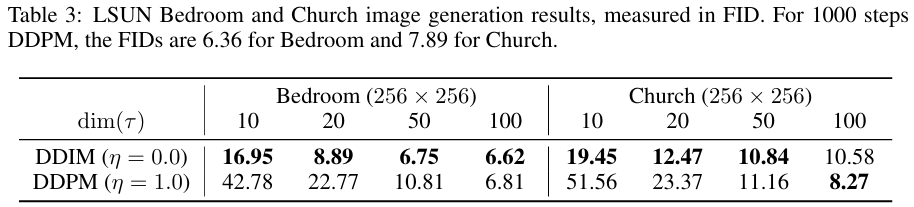
D.2反向过程子序列选择
当期望的$dim(\tau)<T$时，我们考虑两种选择$\tau$的过程：
- 线性选择：我们选择时间步，使得对于某个c，$\tau_{i}=\lfloor ci\rfloor$。
- 二次选择：我们选择时间步，使得对于某个c，$\tau_{i}=\left\lfloor ci^{2}\right\rfloor$。
常数c的选择应使$\tau_{-1}$接近T。我们对CIFAR10数据集使用二次选择，对其余数据集使用线性选择。这些选择在各自的数据集中比其他选择实现了略好的FID。
D.3每个采样步骤的封闭形式方程
根据公式（12）中的一般采样方程，我们有以下更新方程：
其中，$\sigma_{\tau_{i}}(\eta)=\eta \sqrt{\frac{1-\alpha_{\tau_{i-1}}}{1-\alpha_{\tau_{i}}}} \sqrt{1-\frac{\alpha_{\tau_{i}}}{\alpha_{\tau_{i-1}}}}$。
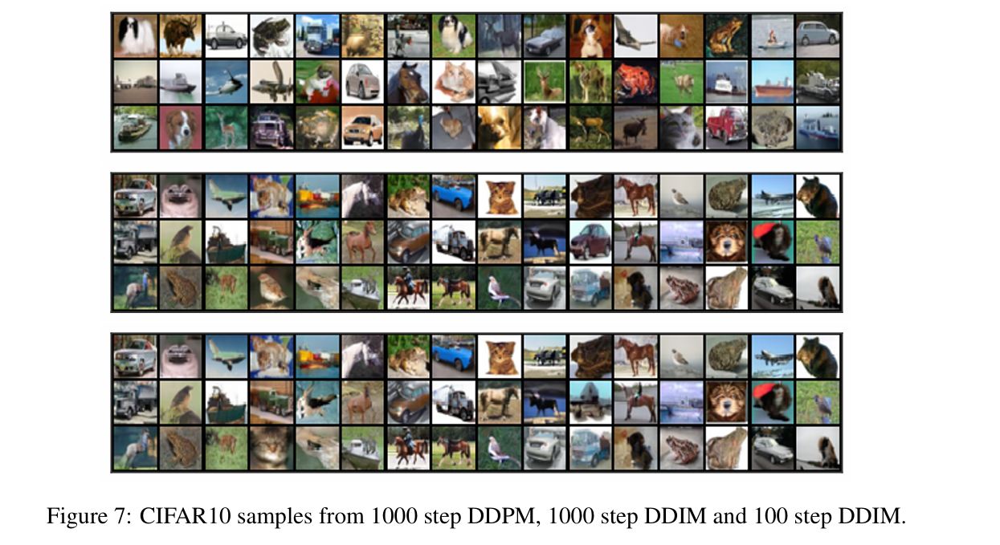
对于$\hat{\sigma}$（具有更大方差的DDPM）的情况，更新方程变为：
与$\eta = 1$的更新相比，它对$\epsilon$使用了不同的系数，但对非随机部分使用了相同的系数。这种更新比$\eta = 1$的更新更具随机性，这解释了为什么在$dim(\tau)$较小时它的性能更差。
D.4样本和一致性
我们在图7（CIFAR10）、图8（CelebA）、图10（教堂）中展示了更多样本，并在图9（CelebA）中展示了DDIM的一致性结果。
D.5插值
为了在一条线上生成插值，我们从标准高斯分布中随机采样两个初始$x_{T}$值，使用球面线性插值（Shoemake，1985年）对它们进行插值，然后使用DDIM获得$x_{0}$样本。
其中，$\theta=\arccos (\frac{(x_{T}^{(0)})^{\top} x_{T}^{(1)}}{\left|x_{T}^{(0)}\right|\left|x_{T}^{(1)}\right|})$。这些值用于生成DDIM样本。
为了在网格上生成插值，我们采样四个潜在变量并将它们分成两对；然后，我们对同一$\alpha$下的两对使用球面线性插值，并在两对之间对插值后的样本使用球面线性插值（在独立选择的插值系数下）。我们在图11（CelebA）、图12（卧室）和图13（教堂）中展示了更多的网格插值结果。
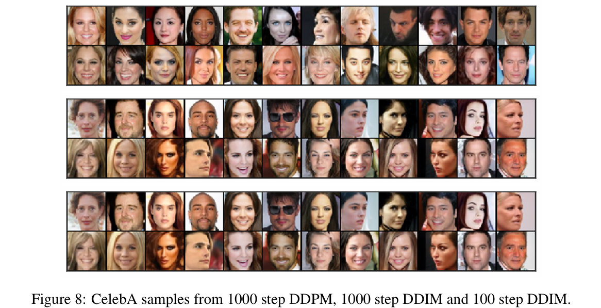
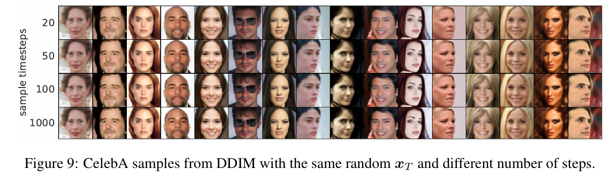
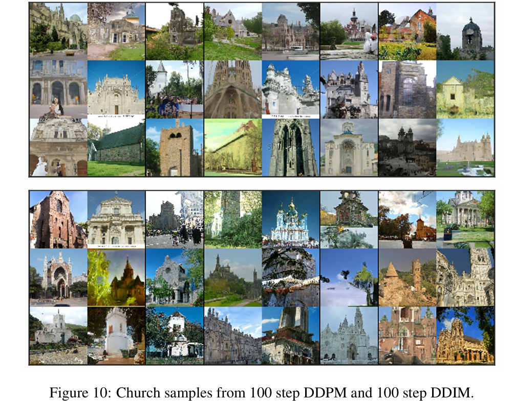
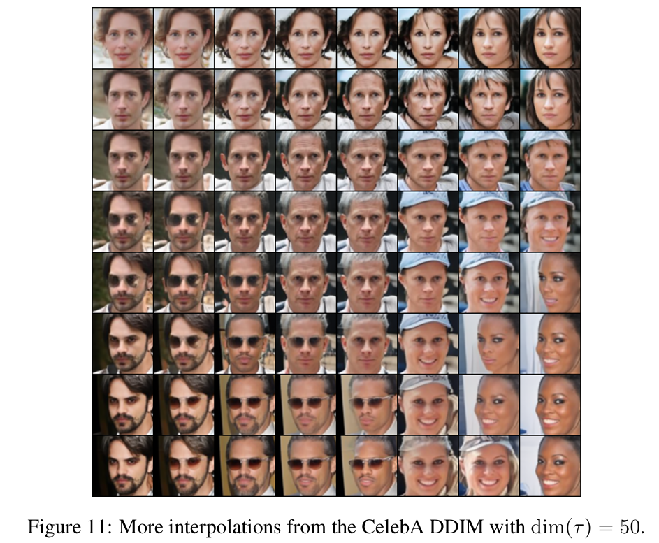
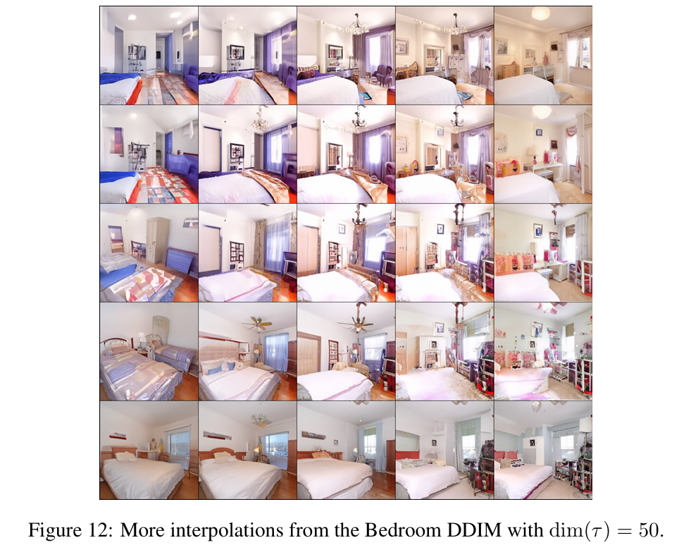
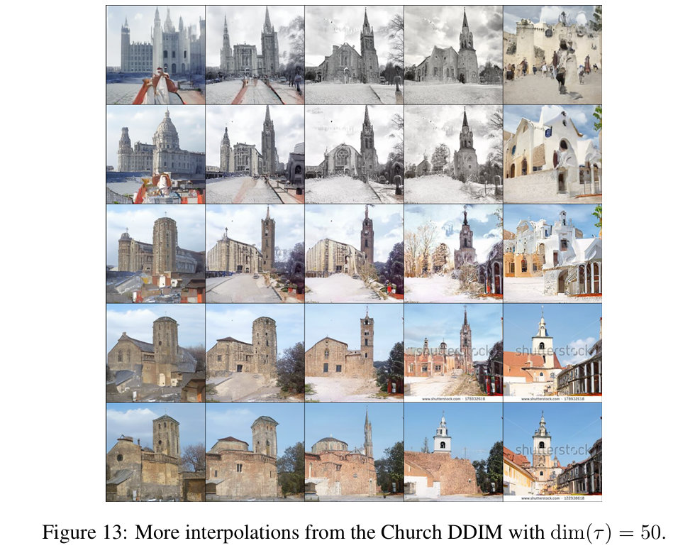
疑问
BACKGROUND
$p_{\theta}(x_{0}) = \int p_{\theta}(x_{0:T})dx_{1:T}$
在去噪扩散概率模型（DDPMs）的框架下，公式$p_{\theta}(x_{0}) = \int p_{\theta}(x_{0:T})dx_{1:T}$用于描述从模型分布中生成样本的过程，具体解释如下：
- 符号含义
- $p_{\theta}(x_{0})$：表示模型最终生成的目标数据（如图片像素值向量）$x_{0}$的概率分布，其中$\theta$是模型的参数，用于控制分布的具体形式，通过训练调整$\theta$使$p_{\theta}(x_{0})$逼近真实数据分布。
- $p_{\theta}(x_{0:T})$：代表联合概率分布，描述了从初始状态$x_{0}$到中间多个潜在状态$x_{1}, x_{2}, \cdots, x_{T}$的联合概率情况，它由先验概率$p_{\theta}(x_{T})$和一系列条件概率$p_{\theta}^{(t)}(x_{t - 1}|x_{t})$（$t = 1, 2, \cdots, T$）相乘得到，即$p_{\theta}(x_{0:T}) := p_{\theta}(x_{T})\prod_{t = 1}^{T}p_{\theta}^{(t)}(x_{t - 1}|x_{t})$ 。
- $dx_{1:T}$：是对中间潜在变量$x_{1}$到$x_{T}$进行积分的微元，表示对所有可能的中间状态组合进行求和。
- 公式意义：该公式本质上是在求
边缘概率。在生成模型中，$x_{0}$是最终想要生成的样本，但它的生成依赖于一系列中间潜在变量$x_{1}, \cdots, x_{T}$ 。$p_{\theta}(x_{0:T})$描述了包含中间变量的联合分布情况，通过对中间变量$x_{1}$到$x_{T}$在其整个取值空间上进行积分，就可以得到只关于目标变量$x_{0}$的概率分布$p_{\theta}(x_{0})$。这就好比在一个复杂的生成过程中，把中间步骤所有可能的变化情况都考虑进来，最终得到生成某个特定样本$x_{0}$的概率。在DDPMs训练时，通过调整$\theta$使$p_{\theta}(x_{0})$接近真实数据分布，从而让模型学会生成逼真的样本。
VARIATIONAL INFERENCE FOR NON-MARKOVIAN FORWARD PROCESSES
$q_{\sigma}(x_{1:T}|x_{0}) := q_{\sigma}(x_{T}|x_{0})\prod_{t = 2}^{T}q_{\sigma}(x_{t - 1}|x_{t}, x_{0})$的推导
- DDPM令$q(x_{t}|x_{t-1},…x_{0}) = q_(x_{t}|x_{t-1})$，构造了一个马尔可夫过程，使得$q\left(x_{1: T} | x_{0}\right):=\prod_{t=1}^{T} q\left(x_{t} | x_{t-1}\right), q\left(x_{t} | x_{t-1}\right):=\mathcal{N}\left(x_{t} ; \sqrt{1-\beta_{t}} x_{t-1}, \beta_{t} I\right)$
- DDIM令$q(x_{t}|x_{t-1},…x_{0}) = q(x_{t}|x_{t-1},x_{0})$，构造了一个非马尔可夫过程，使得$q_{\sigma}(x_{1:T}|x_{0}) := q_{\sigma}(x_{T}|x_{0})\prod_{t = 2}^{T}q_{\sigma}(x_{t - 1}|x_{t}, x_{0}) $
- 具体推导如下：